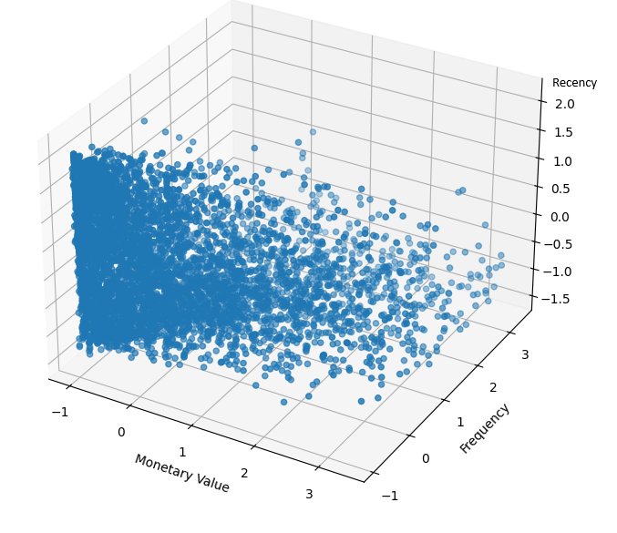
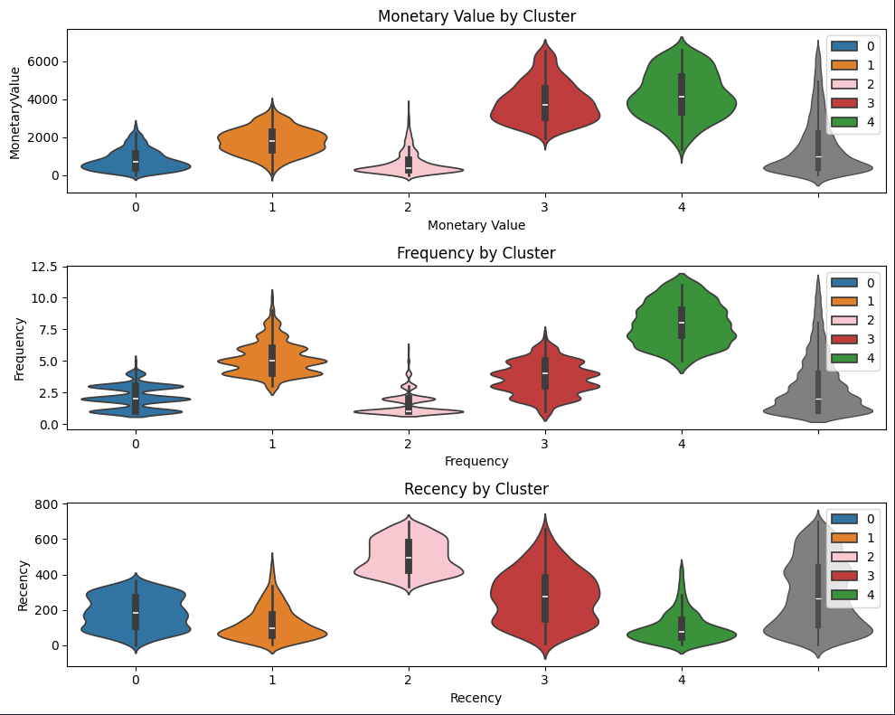
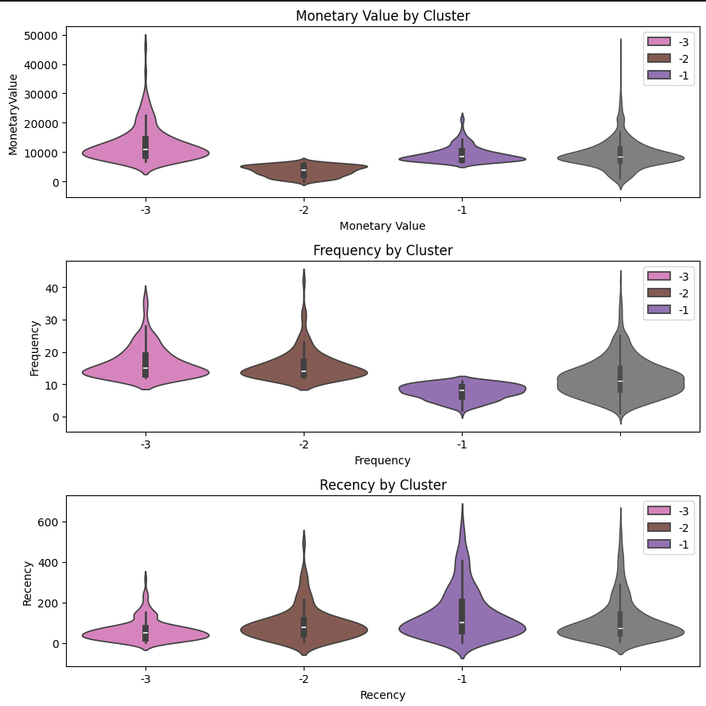
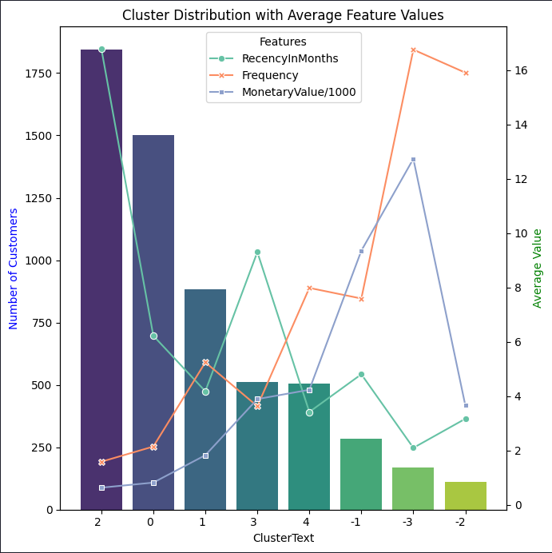
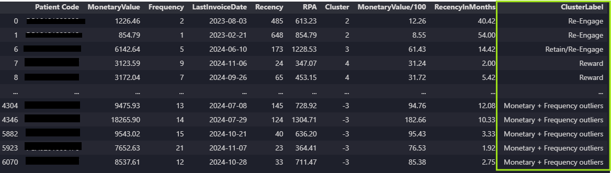

RFM Analysis
Table of Contents
Project Overview
Introduction
This project is a real-life application that I conducted at my current job aimed at enhancing existing patient revenue. It involved sophisticated data analysis techniques including RFM Analysis and KMeans clustering to segment our patient base effectively and uncover targeted strategies for increasing their engagement and spending.
Objective
The main objective of this project was to leverage advanced analytics to improve revenue generation from existing patients. By identifying distinct segments within our patient population, we aimed to tailor marketing efforts and service offerings to meet the unique needs and behaviors of each group.
Methodology
Theoretical Framework
RFM Analysis: RFM stands for Recency, Frequency, and Monetary value, a marketing analysis tool used to quantify customer value by examining how recently a customer has purchased (recency), how often they purchase (frequency), and how much the customer spends (monetary). It is particularly useful in segmentation by identifying customers who are more likely to respond to promotions and other marketing efforts.
KMeans Clustering: KMeans is an unsupervised learning algorithm that solves the clustering problem. It classifies a given data set through a certain number of clusters (assume k clusters) fixed a priori. It works iteratively to assign each data point to one of K groups based on the features that are provided.
Data Collection and Preparation
Data Source: Sales Data collected since January 1, 2023.
Data Cleaning Steps:
- Removing Non-Service Data: Data unrelated to services was excluded to focus analysis on relevant transactions.
- Monetary Column Transformation: Transformed monetary columns to integers to facilitate quantitative analysis.
- Outlier Management: Instead of removing outliers, data points beyond the 75th percentile were separated for individual analysis to ensure that high-value insights were not discarded.
Clustering Preparation
- Determination of Cluster Number:
Inertia and Silhouette Scores: To determine the optimal number of clusters, I conducted tests measuring inertia (sum of squared distances of samples to their closest cluster center) and silhouette scores (measure of how similar an object is to its own cluster compared to other clusters). Analysis of these scores indicated that the difference between having five and six clusters was minimal, hence five was selected as the optimal number.
- Feature Scaling: Prior to clustering, features were scaled to ensure that each feature contributed equally to the analysis, preventing any one feature from dominating the others due to its scale.
- KMeans Implementation:
3D Plot Visualization: After applying the KMeans clustering, I visualized the clusters using a 3D plot to illustrate the segmentation based on the three features (Recency, Frequency, Monetary).

Cluster Analysis and Visualization
After implementing the KMeans clustering, the analysis yielded distinct patient groups each characterized by specific behavioral patterns:
- Violin Graphs for Feature Distribution:
Three violin graphs displayed the distributions of Recency, Frequency, and Monetary Value for each cluster. These graphs highlighted the variation in patient behavior within each cluster by showing both the range and density of each feature.
 - Outlier Analysis:
Outliers were analyzed separately and categorized into three additional clusters. Each outlier cluster was visualized using violin graphs to detail their distinct attributes compared to the general patient population.
 - Summary of Clusters:
A comprehensive graph summarized the average values of Recency, Frequency, and Monetary for each cluster, alongside the number of patients in each group. This visualization facilitated a clear understanding of the defining traits of each cluster.

Strategic Insights and Recommendations
The insights gained from the clustering process led to targeted recommendations that I suggested for each patient cluster:
Outliers:
- Cluster (-1) - Monetary Outliers:
Patients in this cluster spend significantly with the practice. Recommended actions include rewarding these patients with exclusive perks such as Glamfam memberships or product baskets, and ensuring they receive exceptional service during visits.
- Cluster (-2) - Frequency Outliers:
These patients visit frequently but spend less. Strategies such as offering package deals or discounts could potentially increase their spending.
- Cluster (-3) - Monetary and Frequency Outliers:
These are the most valuable patients, characterized by both frequent visits and high spending. Similar to Cluster (-1), these patients should be offered top-tier rewards and VIP care.
Non-Outliers:
- Cluster 2:
Comprising about 1,800 patients, these individuals have not engaged recently, with an average last visit around 17 months ago. They are low on both visit frequency and spending. Suggested outreach includes re-engagement through cost-effective channels like SMS or email.
- Cluster 0:
Includes approximately 1,500 patients who visit 1-3 times annually and spend below the average. The focus here should be on upselling during their visits without allocating special resources.
- Cluster 1:
About 900 patients who visit 3-4 times annually. They are potential candidates for moving up from a middle-tier to a higher-tier spending group through strategic engagement and offers.
- Cluster 3:
Around 500 patients who were previously high-value but have shown reduced engagement recently. Efforts should be made to re-engage these patients as they have demonstrated potential to be high spenders.
- Cluster 4:
Represents about 500 of our best current patients, visiting 4-6 times annually and spending above average. They should be recognized with special rewards and possibly exclusive offers to foster loyalty.
Conclusion and Implementation
Following the comprehensive analysis and strategic planning, each patient cluster was assigned specific labels that reflect their characteristics and potential value to the practice. This labeling process was not only a theoretical exercise but also led to actionable outputs:
- Final Product Delivery: Each patient in our database was tagged with their respective cluster label. This tagging system has been integrated into our CRM system, enabling personalized marketing approaches and tailored service delivery.
- Operational Impact: The integration of these labels allows our staff—from the front desk to service providers—to instantly recognize and adapt their interactions based on the categorized needs and behaviors of each patient. This personalized approach is designed to enhance patient satisfaction and loyalty, thereby increasing overall revenue.
- Strategic Follow-up: The labels also serve as a key tool for ongoing marketing strategies and service adjustments. They enable our marketing team to craft targeted campaigns and promotions that are specifically designed to engage each segment effectively, from re-engaging lost patients to enhancing the loyalty of high-value customers.
This systematic labeling and implementation ensure that my insights translate into concrete actions and measurable improvements, aligning with our overall goal of enhancing existing patient revenue through informed, data-driven decisions.
Back to the top